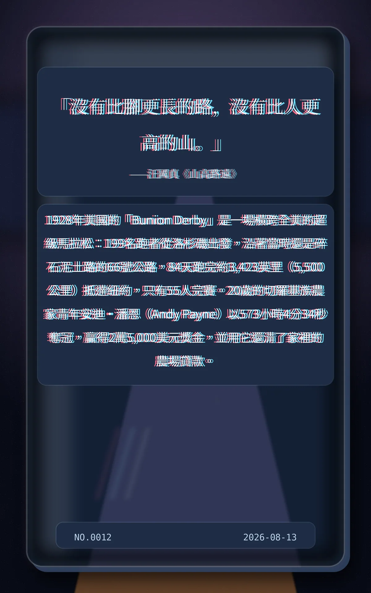

「沒有比腳更長的路，沒有比人更高的山。」——汪國真《山高路遠》
1928年美國的「Bunion Derby」是一場橫跨全美的超級馬拉松：199名跑者從洛杉磯出發，沿著當時還是碎石泥土路的66號公路，84天跑完約3,423英里（5,500公里）抵達紐約，只有55人完賽。20歲的切羅基族農家青年安迪·潘恩（Andy Payne）以573小時4分34秒奪冠，贏得2萬5,000美元獎金，並用它還清了家裡的農場貸款。
2b7e5e3ecc2599b6冷知识由执笔的模型自行查证。逐条断言、来源与所引原句存档在纯文字副本里，未经程序逐字校验，留作事后核实。